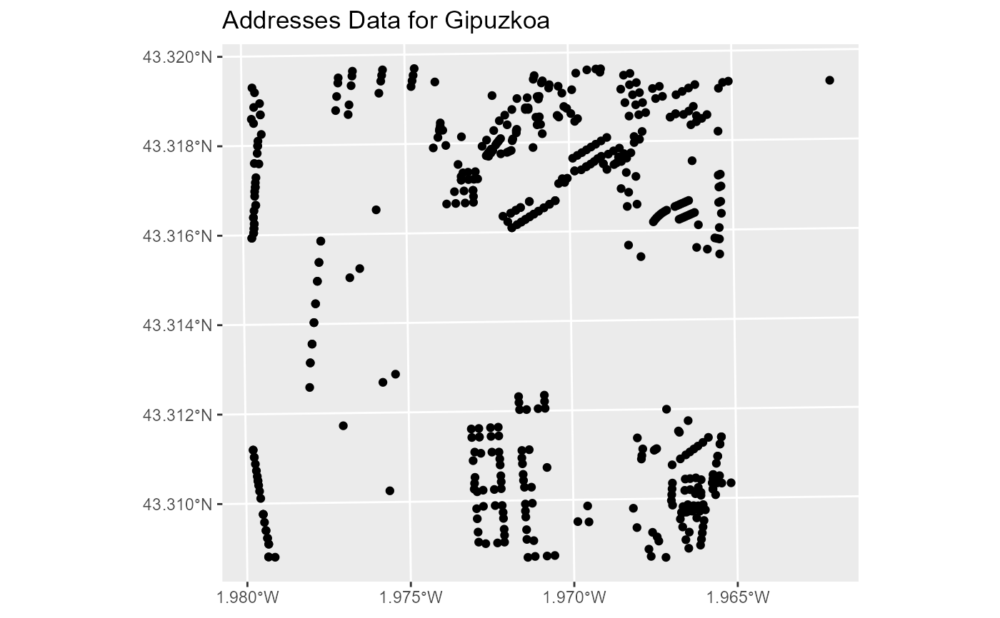
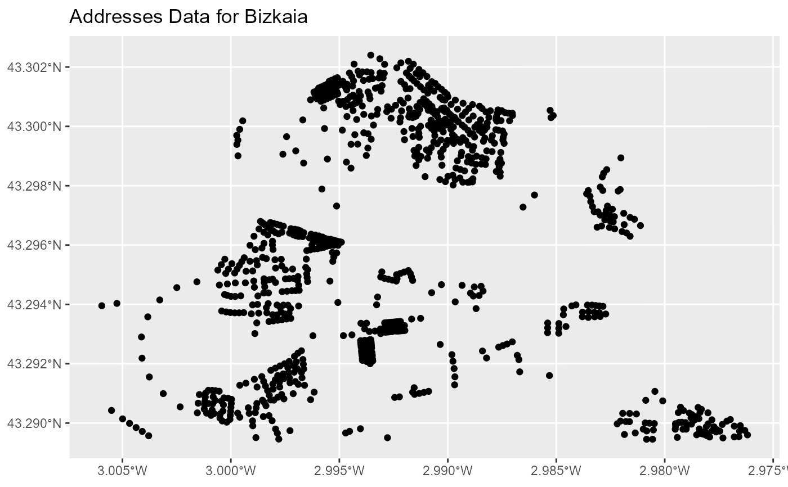

Retrieve Address Data in Pais Vasco Based on Bounding Box Coordinates
Source:R/wfs_eus_ad.R
catreus_wfs_get_address_bbox.RdThis function fetches addresses data within a specified bounding box. It first checks if the provided coordinates are valid, determines the province based on these coordinates using reverse geocoding, and fetches address data for Bizkaia or Gipuzkoa accordingly. It supports transformations between geographical and UTM coordinate systems, handles multiple Coordinate Reference Systems (CRS), and manages different minimum counts for returned records.
Arguments
- x
Bounding box coordinates or a spatial object, which could be:
A numeric vector of length 4 with the coordinates defining the bounding box:
c(latitude1, longitude1, latitude2, longitude2).An
sf/sfcobject from the sf package.
- srs
Spatial Reference System (SRS) or Coordinate Reference System (CRS) code to be used in the query. For best results, ensure the coordinates are in ETRS89 (EPSG:25830) or WGS84 (EPSG:4326) when using latitude and longitude.
- verbose
Logical; if
TRUE, additional information about function operations is printed. Useful for debugging. Default isFALSE.- count
Integer specifying the maximum number of address records to return, or
NULLto use default settings of the API service.
Value
Depending on the input and geographic location, this function may return:
A message detailing the success of the query and the province fetched.
A warning message if the bounding box spans multiple provinces.
An error message if the coordinates are not within Pais Vasco.
Details
This function uses reverse geocoding to determine the province within the Basque Country from the coordinates provided. Based on the province, it delegates the data fetching to specific functions handling each province's data. It supports flexible input types and handles geographical coordinate transformations internally if needed.
See also
st_bbox, which is used to manage spatial bounding boxes.
Examples
# \donttest{
# Define bounding box coordinates for an urban location in Gipuzkoa
coords_gipuzkoa <- c(582745.070132,4795611.169048,584249.337348,4796830.604835)
# Fetch address data using the bounding box
addresses_gipuzkoa <- catreus_wfs_get_address_bbox(coords_gipuzkoa, srs = 25830)
#> Passing 1 coordinate to the Nominatim single coordinate geocoder
#> Query completed in: 1 seconds
#> Passing 1 coordinate to the Nominatim single coordinate geocoder
#> Query completed in: 1 seconds
#> [1] "Province of Gipuzkoa:"
#> [1] "-------------------------------"
library(ggplot2)
# Plot the buildings data
ggplot(addresses_gipuzkoa) +
geom_sf() + ggtitle("Addresses Data for Gipuzkoa")

# Define bounding box coordinates for a location in Bizkaia
coords_bizkaia <- c(499307.414680, 4792958.784686, 502508.961032, 4796815.771278)
# Fetch address data using the bounding box
addresses_bizkaia <- catreus_wfs_get_address_bbox(coords_bizkaia, srs = 25830)
#> Passing 1 coordinate to the Nominatim single coordinate geocoder
#> Query completed in: 1 seconds
#> Passing 1 coordinate to the Nominatim single coordinate geocoder
#> Query completed in: 1 seconds
#> [1] "Province of Bizkaia:"
#> [1] "-------------------------------"
#> Warning: incomplete final line found on 'C:\Users\RUNNER~1\AppData\Local\Temp\RtmpaGdNLX/filec4f89199e.gml'
#> Warning: GDAL Message 1: Field with same name (identifier) already exists in (Address). Skipping newer ones
#> Warning: GDAL Message 1: Field with same name (identifier) already exists in (Address). Skipping newer ones
library(ggplot2)
# Plot the buildings data
ggplot(addresses_bizkaia) +
geom_sf() + ggtitle("Addresses Data for Bizkaia")

# }